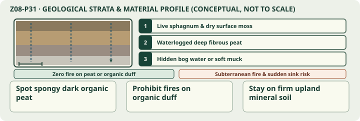

Z08-P31 · Rocks, minerals and materials · New manuscript
Peat, Organic Muck and Unstable Wetland Substrates
Identify deep organic peat and bog muck substrates to prevent entrapment, ground-fire smoldering, and shelter collapse.
When it applies · Northern Minnesota bogs, fens, cedar swamps, and wetland margins.
Equipment · Topographic map, walking probe from firm upland edge.

Actions
- Recognize dark fibrous peat and soft muck by springy underfoot bounce, standing tannin water, and sphagnum moss cover lacking firm mineral grit.[R02, R18]
- Never build fires on peat, thick leaf duff, or organic wetland soil because deep root fires smolder invisibly underground for weeks and reignite wildfires.[R18, C01]
- Keep camp structures, anchors, and foot travel on solid upland mineral ground rather than testing floating peat edges.[R18, X12]
Failure recognition · Building a fire on dry-looking bog peat or stepping onto quaking muck causes subterranean wildfire ignition and cold-water entrapment.[R18, C01, X12]
Verify · Mineral soil verification precedes any lawful fire site, and wetland margins are observed from firm upland ground.[R18, C01]
Stop or change course · Stop advancing immediately when ground flexes underfoot or dark organic peat replaces firm mineral soil.[R18, X12]
Evidence and editorial notes
- C01 · Minnesota DNR · Fire Danger and Burning Restrictions (current web edition; verify at use)
- Section: Fire danger and burning restrictions map and links · Conditions: Current Minnesota location, date and jurisdiction
Support: Check current restrictions and local authority requirements before lighting.
Limitations: Restrictions can change daily with humidity, wind, and drought; verify immediately before use. · Conflicting evidence: None; local jurisdiction always supersedes general notes.
Editorial note: Mandatory legal check before any live fire card. · Specialist reviewer: Fire prevention and local land management
Primary source · checked 2026-11-24 - R02 · Minnesota DNR · Minnesota Geology and Glacial History Overview (Current web edition)
- Section: Glacial drift and landscape materials · Conditions: Glacial till, moraines, outwash, and lake-plain deposits
Support: Glacial transport mixes erratics and cobbles from distant source formations across Minnesota soils and stream beds.
Limitations: Cobble location does not prove local bedrock origin or uniform internal stone integrity. · Conflicting evidence: None noted.
Editorial note: Separates erratic cobbles from bedrock strata. · Specialist reviewer: Quaternary geologist
Primary source · checked 2026-11-25
Current assessment · A04-R02 (2026-11-25) · Bounded support confirmed from an alternate source (A04): Long-distance ice transport and mixed deposits are supported. The evidence cannot trace individual cobbles without local work. Limits: Specialist review PENDING (Quaternary geologist); publication HOLD. All release decisions pending. - R18 · Minnesota DNR · Minnesota Native Plant Communities and Biomes (Current web edition)
- Section: Natural plant fiber harvest limits and conservation ethics · Conditions: Bast fibers, rushes, sedges, and woody stems in regional biomes
Support: Harvesting fibrous plants without landowner permission or in protected native plant communities damages ecosystems and may violate law.
Limitations: Strength of hand-twisted plant cordage varies sharply with retting, moisture, and knots; never assign life-safety loads. · Conflicting evidence: None noted.
Editorial note: Connects Z08 fibers to Z09 load limits and law. · Specialist reviewer: Botanist and materials specialist
Primary source · checked 2026-11-25
Current assessment · A04-R18 (2026-11-25) · Open: support partial or missing (A04): Site limits are supported. Broader landownership and habitat-effect statement needs site and specific governing authority. Limits: Specialist review PENDING (Botanist and materials specialist); publication HOLD. All release decisions pending. - X12 · US EPA · What is a Wetland (current web edition)
- Section: What is a Wetland > Bogs, Fens, Swamps and Marshes · Conditions: Upper Midwest boreal bogs, marshes, beaver ponds and coastal wetlands
Support: Wetlands feature saturated hydric soils, floating vegetation mats (quaking bogs), hidden channels and fluctuating water tables that conceal deep muck, unstable footing and slow-draining floodwaters.
Limitations: Winter ice over bogs and wetlands is especially erratic due to decaying organic heat and seepage. · Conflicting evidence: Aligns with B014-P12 and NPS-WETLAND.
Editorial note: Core wetland terrain and quaking-bog hazard evidence in Z12. · Specialist reviewer: Wetland ecology and search and rescue
Primary source · checked 2026-11-24
Source lineage · New manuscript (Z08 P16 soil and substrates) · Classification · New manuscript.